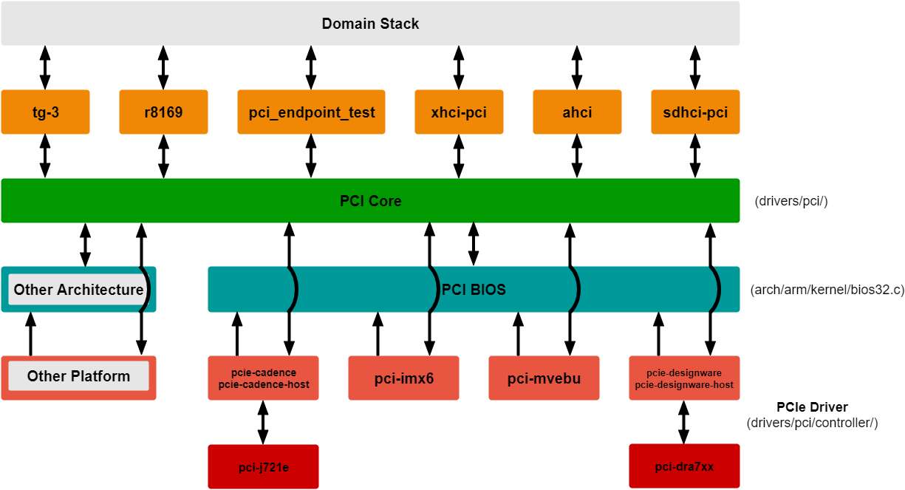

3.2.2.13. PCIe Root Complex¶
Introduction
The PCI Express (PCIe) module is a multi-lane I/O interconnect providing low pin count, high reliability, and high-speed data transfer at rates of up to 8.0 Gbps per lane per direction. It is a 3rd Generation I/O Interconnect technology succeeding ISA and PCI bus that is designed to be used as a general-purpose serial I/O interconnect in multiple market segments, including desktop, mobile, server, storage and embedded communications.
RC Software Architecture
Following is the software architecture for Root Complex mode:
Following is a brief explanation of layers shown in the diagram:
There are different drivers for the connected PCIe devices like pci_endpoint_test, tg-3, r8169, xhci-pci, ahci, etc. It could be vendor-specific like most of the ethernet cards (tg3, r8169) or class-specific like xhci-pci and ahci. Each of these drivers will also interact with it’s own domain-specific stack. For example, tg3 will interface with network stack, and xhci-pci will interface with USB stack.
The PCI core layer scans the PCIe bus to identify and detect any PCIe devices. It also binds the driver from the layer above, for the PCIe device, based on vendorid, deviceid and class.
The PCI BIOS layer handles resource management. For example, allocation of memory resources for BARs.
The bottom-most layer consists of the PCIe platform drivers like pcie-cadence, pcie-designware, etc. pci-j721e and pci-dra7xx are TI’s wrappers over these drivers. They configure platform-specific controllers and perform actual register writes.
RC Device Configuration
DTS Modification
The default dts for J784S4 is configured to be used in root complex mode.
Linux Driver Configuration
The following config options have to be enabled in order to configure the PCI controller to be used in Root Complex mode.
CONFIG_SOCIONEXT_SYNQUACER_PREITS=y
CONFIG_PCI=y
CONFIG_PCI_MSI=y
CONFIG_PCI_J721E=y
CONFIG_PCIE_CADENCE=y
CONFIG_PCIE_CADENCE_HOST=y
Compliance Mode
In RC mode of operation, the Endpoint device can be forced to enter Compliance Mode for PCIe compliance testing by setting the “EC” bit in the LINK_CTRL_STATUS_2 register of the respective PCIe RC instance. Setting “EC” to 1 initiates a hot reset thereby forcing the Endpoint device into Compliance mode. The “EC” bit can be set from command-line by using devmem2 utility as follows:
devmem2 <address> w <value>
where <address> is the address of LINK_CTRL_STATUS_2 register and <value> is the resulting value to be written with “EC” bit of the register set.
Testing Details
The RC should enumerate any off-the-shelf PCIe cards. It has been tested with Ethernet cards, NVMe cards, PCIe USB card, PCIe WiFi card, PCIe SATA card and also to J784S4 in loopback mode.
In order to see if the connected card is detected, lspci utility should be used. Different utilities can be used depending on the cards.
Following are the outputs for some of them:
Loopback mode (J784S4 EVM to J784S4 EVM)
Two J784S4 EVMs can be connected in loopback mode by following the steps explained in End Point (EP) Device Configuration section for End Point (EP) and HOST Device Configuration section for Root Complex (RC) in PCIe End Point documentation. The pci-epf-test driver will be configured for End Point(EP) using those steps.
The lspci output on the Root Complex (RC) device is as follows:
root@j721e-evm:~# lspci 0000:00:00.0 PCI bridge: Texas Instruments Device b00d 0000:01:00.0 Unassigned class [ff00]: Texas Instruments Device b00d 0000:01:00.1 Unassigned class [ff00]: Texas Instruments Device b00d 0000:01:00.2 Unassigned class [ff00]: Texas Instruments Device b00d 0000:01:00.3 Unassigned class [ff00]: Texas Instruments Device b00d 0000:01:00.4 Unassigned class [ff00]: Texas Instruments Device b00d 0000:01:00.5 Unassigned class [ff00]: Texas Instruments Device b00d 0001:00:00.0 PCI bridge: Texas Instruments Device b00d 0002:00:00.0 PCI bridge: Texas Instruments Device b00d
WiFi card
lspci output
root@j721e-evm:~# lspci 0000:00:00.0 PCI bridge: Texas Instruments Device b00d 0000:01:00.0 Network controller: Intel Corporation Wireless 3160 (rev 6b) 0001:00:00.0 PCI bridge: Texas Instruments Device b00d 0002:00:00.0 PCI bridge: Texas Instruments Device b00d
Test using ping
root@j721e-evm:~# ping 192.168.10.1 -w 10| PING 192.168.10.1 (192.168.10.1): 56 data bytes 64 bytes from 192.168.10.1: seq=0 ttl=64 time=176.985 ms 64 bytes from 192.168.10.1: seq=1 ttl=64 time=49.840 ms 64 bytes from 192.168.10.1: seq=2 ttl=64 time=32.125 ms 64 bytes from 192.168.10.1: seq=3 ttl=64 time=4.652 ms 64 bytes from 192.168.10.1: seq=4 ttl=64 time=70.805 ms 64 bytes from 192.168.10.1: seq=6 ttl=64 time=195.564 ms 64 bytes from 192.168.10.1: seq=7 ttl=64 time=9.321 ms 64 bytes from 192.168.10.1: seq=8 ttl=64 time=5.784 ms 64 bytes from 192.168.10.1: seq=9 ttl=64 time=18.015 ms
NVMe SSD
lspci output
root@j721e-evm:~# lspci -vv 0000:00:00.0 PCI bridge: Texas Instruments Device b00d (prog-if 00 [Normal decode]) Control: I/O- Mem- BusMaster- SpecCycle- MemWINV- VGASnoop- ParErr- Stepping- SERR- FastB2B- DisINTx- Status: Cap+ 66MHz- UDF- FastB2B- ParErr- DEVSEL=fast >TAbort- <TAbort- <MAbort- >SERR- <PERR- INTx- Interrupt: pin A routed to IRQ 0 Bus: primary=00, secondary=01, subordinate=01, sec-latency=0 I/O behind bridge: None Memory behind bridge: None Prefetchable memory behind bridge: None Secondary status: 66MHz- FastB2B- ParErr- DEVSEL=fast >TAbort- <TAbort- <MAbort- <SERR- <PERR- BridgeCtl: Parity- SERR- NoISA- VGA- VGA16- MAbort- >Reset- FastB2B- PriDiscTmr- SecDiscTmr- DiscTmrStat- DiscTmrSERREn- Capabilities: [80] Power Management version 3 Flags: PMEClk- DSI- D1+ D2- AuxCurrent=0mA PME(D0+,D1+,D2-,D3hot+,D3cold-) Status: D0 NoSoftRst+ PME-Enable- DSel=0 DScale=0 PME- Capabilities: [90] MSI: Enable- Count=1/1 Maskable+ 64bit+ Address: 0000000000000000 Data: 0000 Masking: 00000000 Pending: 00000000 Capabilities: [b0] MSI-X: Enable- Count=1 Masked- Vector table: BAR=0 offset=00000000 PBA: BAR=0 offset=00000008 Capabilities: [c0] Express (v2) Root Port (Slot+), MSI 00 DevCap: MaxPayload 256 bytes, PhantFunc 0 ExtTag- RBE+ DevCtl: CorrErr- NonFatalErr- FatalErr- UnsupReq- RlxdOrd+ ExtTag- PhantFunc- AuxPwr- NoSnoop+ MaxPayload 128 bytes, MaxReadReq 512 bytes DevSta: CorrErr- NonFatalErr- FatalErr- UnsupReq- AuxPwr- TransPend- LnkCap: Port #0, Speed 8GT/s, Width x1, ASPM L1, Exit Latency L1 <8us ClockPM- Surprise- LLActRep- BwNot+ ASPMOptComp+ LnkCtl: ASPM Disabled; RCB 64 bytes Disabled- CommClk- ExtSynch- ClockPM- AutWidDis- BWInt- AutBWInt- LnkSta: Speed 2.5GT/s (downgraded), Width x2 (strange) TrErr- Train- SlotClk- DLActive- BWMgmt- ABWMgmt- SltCap: AttnBtn- PwrCtrl- MRL- AttnInd- PwrInd- HotPlug- Surprise- Slot #0, PowerLimit 0.000W; Interlock- NoCompl- SltCtl: Enable: AttnBtn- PwrFlt- MRL- PresDet- CmdCplt- HPIrq- LinkChg- Control: AttnInd Off, PwrInd Off, Power+ Interlock- SltSta: Status: AttnBtn- PowerFlt- MRL+ CmdCplt- PresDet- Interlock- Changed: MRL- PresDet- LinkState- RootCtl: ErrCorrectable- ErrNon-Fatal- ErrFatal- PMEIntEna- CRSVisible- RootCap: CRSVisible- RootSta: PME ReqID 0000, PMEStatus- PMEPending- DevCap2: Completion Timeout: Range B, TimeoutDis+, LTR+, OBFF Not Supported ARIFwd+ AtomicOpsCap: Routing- 32bit- 64bit- 128bitCAS- DevCtl2: Completion Timeout: 50us to 50ms, TimeoutDis-, LTR-, OBFF Disabled ARIFwd- AtomicOpsCtl: ReqEn- EgressBlck- LnkCtl2: Target Link Speed: 8GT/s, EnterCompliance- SpeedDis- Transmit Margin: Normal Operating Range, EnterModifiedCompliance- ComplianceSOS- Compliance De-emphasis: -6dB LnkSta2: Current De-emphasis Level: -3.5dB, EqualizationComplete-, EqualizationPhase1- EqualizationPhase2-, EqualizationPhase3-, LinkEqualizationRequest- Capabilities: [100 v2] Advanced Error Reporting UESta: DLP- SDES- TLP- FCP- CmpltTO- CmpltAbrt- UnxCmplt- RxOF- MalfTLP- ECRC- UnsupReq- ACSViol- UEMsk: DLP- SDES- TLP- FCP- CmpltTO- CmpltAbrt- UnxCmplt- RxOF- MalfTLP- ECRC- UnsupReq- ACSViol- UESvrt: DLP+ SDES+ TLP- FCP+ CmpltTO- CmpltAbrt- UnxCmplt- RxOF+ MalfTLP+ ECRC- UnsupReq- ACSViol- CESta: RxErr- BadTLP- BadDLLP- Rollover- Timeout- AdvNonFatalErr- CEMsk: RxErr- BadTLP- BadDLLP- Rollover- Timeout- AdvNonFatalErr+ AERCap: First Error Pointer: 00, ECRCGenCap+ ECRCGenEn- ECRCChkCap+ ECRCChkEn- MultHdrRecCap- MultHdrRecEn- TLPPfxPres- HdrLogCap- HeaderLog: 00000000 00000000 00000000 00000000 RootCmd: CERptEn- NFERptEn- FERptEn- RootSta: CERcvd- MultCERcvd- UERcvd- MultUERcvd- FirstFatal- NonFatalMsg- FatalMsg- IntMsg 0 ErrorSrc: ERR_COR: 0000 ERR_FATAL/NONFATAL: 0000 Capabilities: [150 v1] Device Serial Number 00-00-00-00-00-00-00-00 Capabilities: [300 v1] Secondary PCI Express <?> Capabilities: [4c0 v1] Virtual Channel Caps: LPEVC=0 RefClk=100ns PATEntryBits=1 Arb: Fixed- WRR32- WRR64- WRR128- Ctrl: ArbSelect=Fixed Status: InProgress- VC0: Caps: PATOffset=00 MaxTimeSlots=1 RejSnoopTrans- Arb: Fixed- WRR32- WRR64- WRR128- TWRR128- WRR256- Ctrl: Enable+ ID=0 ArbSelect=Fixed TC/VC=ff Status: NegoPending- InProgress- VC1: Caps: PATOffset=00 MaxTimeSlots=1 RejSnoopTrans- Arb: Fixed- WRR32- WRR64- WRR128- TWRR128- WRR256- Ctrl: Enable- ID=1 ArbSelect=Fixed TC/VC=00 Status: NegoPending- InProgress- VC2: Caps: PATOffset=00 MaxTimeSlots=1 RejSnoopTrans- Arb: Fixed- WRR32- WRR64- WRR128- TWRR128- WRR256- Ctrl: Enable- ID=2 ArbSelect=Fixed TC/VC=00 Status: NegoPending- InProgress- VC3: Caps: PATOffset=00 MaxTimeSlots=1 RejSnoopTrans- Arb: Fixed- WRR32- WRR64- WRR128- TWRR128- WRR256- Ctrl: Enable- ID=3 ArbSelect=Fixed TC/VC=00 Status: NegoPending- InProgress- Capabilities: [5c0 v1] Address Translation Service (ATS) ATSCap: Invalidate Queue Depth: 01 ATSCtl: Enable-, Smallest Translation Unit: 00 Capabilities: [640 v1] Page Request Interface (PRI) PRICtl: Enable- Reset- PRISta: RF- UPRGI- Stopped+ Page Request Capacity: 00000001, Page Request Allocation: 00000000 Capabilities: [900 v1] L1 PM Substates L1SubCap: PCI-PM_L1.2+ PCI-PM_L1.1+ ASPM_L1.2+ ASPM_L1.1+ L1_PM_Substates+ PortCommonModeRestoreTime=255us PortTPowerOnTime=26us L1SubCtl1: PCI-PM_L1.2- PCI-PM_L1.1- ASPM_L1.2- ASPM_L1.1- T_CommonMode=0us LTR1.2_Threshold=0ns L1SubCtl2: T_PwrOn=10us Kernel modules: pci_endpoint_test, ntb_hw_epf 0001:00:00.0 PCI bridge: Texas Instruments Device b00d (prog-if 00 [Normal decode]) Control: I/O- Mem+ BusMaster+ SpecCycle- MemWINV- VGASnoop- ParErr- Stepping- SERR- FastB2B- DisINTx- Status: Cap+ 66MHz- UDF- FastB2B- ParErr- DEVSEL=fast >TAbort- <TAbort- <MAbort- >SERR- <PERR- INTx- Latency: 0 Interrupt: pin A routed to IRQ 0 Bus: primary=00, secondary=01, subordinate=01, sec-latency=0 I/O behind bridge: None Memory behind bridge: 18100000-181fffff [size=1M] Prefetchable memory behind bridge: None Secondary status: 66MHz- FastB2B- ParErr- DEVSEL=fast >TAbort- <TAbort- <MAbort- <SERR- <PERR- BridgeCtl: Parity- SERR- NoISA- VGA- VGA16- MAbort- >Reset- FastB2B- PriDiscTmr- SecDiscTmr- DiscTmrStat- DiscTmrSERREn- Capabilities: [80] Power Management version 3 Flags: PMEClk- DSI- D1+ D2- AuxCurrent=0mA PME(D0+,D1+,D2-,D3hot+,D3cold-) Status: D0 NoSoftRst+ PME-Enable- DSel=0 DScale=0 PME- Capabilities: [90] MSI: Enable- Count=1/1 Maskable+ 64bit+ Address: 0000000000000000 Data: 0000 Masking: 00000000 Pending: 00000000 Capabilities: [b0] MSI-X: Enable- Count=1 Masked- Vector table: BAR=0 offset=00000000 PBA: BAR=0 offset=00000008 Capabilities: [c0] Express (v2) Root Port (Slot+), MSI 00 DevCap: MaxPayload 256 bytes, PhantFunc 0 ExtTag- RBE+ DevCtl: CorrErr- NonFatalErr- FatalErr- UnsupReq- RlxdOrd+ ExtTag- PhantFunc- AuxPwr- NoSnoop+ MaxPayload 128 bytes, MaxReadReq 512 bytes DevSta: CorrErr- NonFatalErr- FatalErr- UnsupReq- AuxPwr- TransPend- LnkCap: Port #0, Speed 8GT/s, Width x2, ASPM L1, Exit Latency L1 <8us ClockPM- Surprise- LLActRep- BwNot+ ASPMOptComp+ LnkCtl: ASPM Disabled; RCB 64 bytes Disabled- CommClk- ExtSynch- ClockPM- AutWidDis- BWInt- AutBWInt- LnkSta: Speed 8GT/s (ok), Width x2 (ok) TrErr- Train- SlotClk- DLActive- BWMgmt- ABWMgmt+ SltCap: AttnBtn- PwrCtrl- MRL- AttnInd- PwrInd- HotPlug- Surprise- Slot #0, PowerLimit 0.000W; Interlock- NoCompl- SltCtl: Enable: AttnBtn- PwrFlt- MRL- PresDet- CmdCplt- HPIrq- LinkChg- Control: AttnInd Off, PwrInd Off, Power+ Interlock- SltSta: Status: AttnBtn- PowerFlt- MRL+ CmdCplt- PresDet- Interlock- Changed: MRL- PresDet- LinkState- RootCtl: ErrCorrectable- ErrNon-Fatal- ErrFatal- PMEIntEna- CRSVisible- RootCap: CRSVisible- RootSta: PME ReqID 0000, PMEStatus- PMEPending- DevCap2: Completion Timeout: Range B, TimeoutDis+, LTR+, OBFF Not Supported ARIFwd+ AtomicOpsCap: Routing- 32bit- 64bit- 128bitCAS- DevCtl2: Completion Timeout: 50us to 50ms, TimeoutDis-, LTR-, OBFF Disabled ARIFwd+ AtomicOpsCtl: ReqEn- EgressBlck- LnkCtl2: Target Link Speed: 8GT/s, EnterCompliance- SpeedDis- Transmit Margin: Normal Operating Range, EnterModifiedCompliance- ComplianceSOS- Compliance De-emphasis: -6dB LnkSta2: Current De-emphasis Level: -6dB, EqualizationComplete+, EqualizationPhase1+ EqualizationPhase2+, EqualizationPhase3+, LinkEqualizationRequest- Capabilities: [100 v2] Advanced Error Reporting UESta: DLP- SDES- TLP- FCP- CmpltTO- CmpltAbrt- UnxCmplt- RxOF- MalfTLP- ECRC- UnsupReq- ACSViol- UEMsk: DLP- SDES- TLP- FCP- CmpltTO- CmpltAbrt- UnxCmplt- RxOF- MalfTLP- ECRC- UnsupReq- ACSViol- UESvrt: DLP+ SDES+ TLP- FCP+ CmpltTO- CmpltAbrt- UnxCmplt- RxOF+ MalfTLP+ ECRC- UnsupReq- ACSViol- CESta: RxErr- BadTLP- BadDLLP- Rollover- Timeout- AdvNonFatalErr- CEMsk: RxErr- BadTLP- BadDLLP- Rollover- Timeout- AdvNonFatalErr+ AERCap: First Error Pointer: 00, ECRCGenCap+ ECRCGenEn- ECRCChkCap+ ECRCChkEn- MultHdrRecCap- MultHdrRecEn- TLPPfxPres- HdrLogCap- HeaderLog: 00000000 00000000 00000000 00000000 RootCmd: CERptEn- NFERptEn- FERptEn- RootSta: CERcvd- MultCERcvd- UERcvd- MultUERcvd- FirstFatal- NonFatalMsg- FatalMsg- IntMsg 0 ErrorSrc: ERR_COR: 0000 ERR_FATAL/NONFATAL: 0000 Capabilities: [150 v1] Device Serial Number 00-00-00-00-00-00-00-00 Capabilities: [300 v1] Secondary PCI Express <?> Capabilities: [4c0 v1] Virtual Channel Caps: LPEVC=0 RefClk=100ns PATEntryBits=1 Arb: Fixed- WRR32- WRR64- WRR128- Ctrl: ArbSelect=Fixed Status: InProgress- VC0: Caps: PATOffset=00 MaxTimeSlots=1 RejSnoopTrans- Arb: Fixed- WRR32- WRR64- WRR128- TWRR128- WRR256- Ctrl: Enable+ ID=0 ArbSelect=Fixed TC/VC=ff Status: NegoPending- InProgress- VC1: Caps: PATOffset=00 MaxTimeSlots=1 RejSnoopTrans- Arb: Fixed- WRR32- WRR64- WRR128- TWRR128- WRR256- Ctrl: Enable- ID=1 ArbSelect=Fixed TC/VC=00 Status: NegoPending- InProgress- VC2: Caps: PATOffset=00 MaxTimeSlots=1 RejSnoopTrans- Arb: Fixed- WRR32- WRR64- WRR128- TWRR128- WRR256- Ctrl: Enable- ID=2 ArbSelect=Fixed TC/VC=00 Status: NegoPending- InProgress- VC3: Caps: PATOffset=00 MaxTimeSlots=1 RejSnoopTrans- Arb: Fixed- WRR32- WRR64- WRR128- TWRR128- WRR256- Ctrl: Enable- ID=3 ArbSelect=Fixed TC/VC=00 Status: NegoPending- InProgress- Capabilities: [5c0 v1] Address Translation Service (ATS) ATSCap: Invalidate Queue Depth: 01 ATSCtl: Enable-, Smallest Translation Unit: 00 Capabilities: [640 v1] Page Request Interface (PRI) PRICtl: Enable- Reset- PRISta: RF- UPRGI- Stopped+ Page Request Capacity: 00000001, Page Request Allocation: 00000000 Capabilities: [900 v1] L1 PM Substates L1SubCap: PCI-PM_L1.2+ PCI-PM_L1.1+ ASPM_L1.2+ ASPM_L1.1+ L1_PM_Substates+ PortCommonModeRestoreTime=255us PortTPowerOnTime=26us L1SubCtl1: PCI-PM_L1.2- PCI-PM_L1.1- ASPM_L1.2- ASPM_L1.1- T_CommonMode=0us LTR1.2_Threshold=0ns L1SubCtl2: T_PwrOn=10us Kernel modules: pci_endpoint_test, ntb_hw_epf 0001:01:00.0 Non-Volatile memory controller: Lite-On Technology Corporation M8Pe Series NVMe SSD (rev 01) (prog-if 02 [NVM Express]) Subsystem: Marvell Technology Group Ltd. M8Pe Series NVMe SSD Control: I/O- Mem+ BusMaster+ SpecCycle- MemWINV- VGASnoop- ParErr- Stepping- SERR- FastB2B- DisINTx+ Status: Cap+ 66MHz- UDF- FastB2B- ParErr- DEVSEL=fast >TAbort- <TAbort- <MAbort- >SERR- <PERR- INTx- Latency: 0 Interrupt: pin A routed to IRQ 0 Region 0: Memory at 18120000 (64-bit, non-prefetchable) [size=16K] Expansion ROM at 18100000 [size=128K] Capabilities: [40] Power Management version 3 Flags: PMEClk- DSI- D1- D2- AuxCurrent=0mA PME(D0-,D1-,D2-,D3hot-,D3cold-) Status: D0 NoSoftRst+ PME-Enable- DSel=0 DScale=0 PME- Capabilities: [50] MSI: Enable- Count=1/1 Maskable+ 64bit+ Address: 0000000000000000 Data: 0000 Masking: 00000000 Pending: 00000000 Capabilities: [70] Express (v2) Endpoint, MSI 00 DevCap: MaxPayload 128 bytes, PhantFunc 0, Latency L0s unlimited, L1 unlimited ExtTag- AttnBtn- AttnInd- PwrInd- RBE+ FLReset+ SlotPowerLimit 0.000W DevCtl: CorrErr- NonFatalErr- FatalErr- UnsupReq- RlxdOrd+ ExtTag- PhantFunc- AuxPwr- NoSnoop- FLReset- MaxPayload 128 bytes, MaxReadReq 512 bytes DevSta: CorrErr- NonFatalErr- FatalErr- UnsupReq- AuxPwr- TransPend- LnkCap: Port #0, Speed 8GT/s, Width x4, ASPM L1, Exit Latency L1 <64us ClockPM+ Surprise- LLActRep- BwNot- ASPMOptComp+ LnkCtl: ASPM Disabled; RCB 64 bytes Disabled- CommClk- ExtSynch- ClockPM- AutWidDis- BWInt- AutBWInt- LnkSta: Speed 8GT/s (ok), Width x2 (downgraded) TrErr- Train- SlotClk+ DLActive- BWMgmt- ABWMgmt- DevCap2: Completion Timeout: Not Supported, TimeoutDis+, LTR+, OBFF Via message AtomicOpsCap: 32bit- 64bit- 128bitCAS- DevCtl2: Completion Timeout: 50us to 50ms, TimeoutDis-, LTR-, OBFF Disabled AtomicOpsCtl: ReqEn- LnkCtl2: Target Link Speed: 8GT/s, EnterCompliance- SpeedDis- Transmit Margin: Normal Operating Range, EnterModifiedCompliance- ComplianceSOS- Compliance De-emphasis: -6dB LnkSta2: Current De-emphasis Level: -6dB, EqualizationComplete+, EqualizationPhase1+ EqualizationPhase2+, EqualizationPhase3+, LinkEqualizationRequest- Capabilities: [b0] MSI-X: Enable+ Count=19 Masked- Vector table: BAR=0 offset=00002000 PBA: BAR=0 offset=00003000 Capabilities: [100 v2] Advanced Error Reporting UESta: DLP- SDES- TLP- FCP- CmpltTO- CmpltAbrt- UnxCmplt- RxOF- MalfTLP- ECRC- UnsupReq- ACSViol- UEMsk: DLP- SDES- TLP- FCP- CmpltTO- CmpltAbrt- UnxCmplt- RxOF- MalfTLP- ECRC- UnsupReq- ACSViol- UESvrt: DLP+ SDES+ TLP- FCP+ CmpltTO- CmpltAbrt- UnxCmplt- RxOF+ MalfTLP+ ECRC- UnsupReq- ACSViol- CESta: RxErr- BadTLP- BadDLLP- Rollover- Timeout- AdvNonFatalErr- CEMsk: RxErr- BadTLP- BadDLLP- Rollover- Timeout- AdvNonFatalErr+ AERCap: First Error Pointer: 00, ECRCGenCap+ ECRCGenEn+ ECRCChkCap+ ECRCChkEn+ MultHdrRecCap- MultHdrRecEn- TLPPfxPres- HdrLogCap- HeaderLog: 00000000 00000000 00000000 00000000 Capabilities: [148 v1] Device Serial Number 00-00-00-00-00-00-00-00 Capabilities: [158 v1] Power Budgeting <?> Capabilities: [168 v1] Alternative Routing-ID Interpretation (ARI) ARICap: MFVC- ACS-, Next Function: 0 ARICtl: MFVC- ACS-, Function Group: 0 Capabilities: [178 v1] Secondary PCI Express <?> Capabilities: [2b8 v1] Latency Tolerance Reporting Max snoop latency: 0ns Max no snoop latency: 0ns Capabilities: [2c0 v1] L1 PM Substates L1SubCap: PCI-PM_L1.2+ PCI-PM_L1.1+ ASPM_L1.2+ ASPM_L1.1+ L1_PM_Substates+ PortCommonModeRestoreTime=10us PortTPowerOnTime=10us L1SubCtl1: PCI-PM_L1.2- PCI-PM_L1.1- ASPM_L1.2- ASPM_L1.1- T_CommonMode=0us LTR1.2_Threshold=0ns L1SubCtl2: T_PwrOn=10us Kernel driver in use: nvme Kernel modules: nvme 0002:00:00.0 PCI bridge: Texas Instruments Device b00d (prog-if 00 [Normal decode]) Control: I/O- Mem- BusMaster- SpecCycle- MemWINV- VGASnoop- ParErr- Stepping- SERR- FastB2B- DisINTx- Status: Cap+ 66MHz- UDF- FastB2B- ParErr- DEVSEL=fast >TAbort- <TAbort- <MAbort- >SERR- <PERR- INTx- Interrupt: pin A routed to IRQ 0 Bus: primary=00, secondary=01, subordinate=01, sec-latency=0 I/O behind bridge: None Memory behind bridge: None Prefetchable memory behind bridge: None Secondary status: 66MHz- FastB2B- ParErr- DEVSEL=fast >TAbort- <TAbort- <MAbort- <SERR- <PERR- BridgeCtl: Parity- SERR- NoISA- VGA- VGA16- MAbort- >Reset- FastB2B- PriDiscTmr- SecDiscTmr- DiscTmrStat- DiscTmrSERREn- Capabilities: [80] Power Management version 3 Flags: PMEClk- DSI- D1+ D2- AuxCurrent=0mA PME(D0+,D1+,D2-,D3hot+,D3cold-) Status: D0 NoSoftRst+ PME-Enable- DSel=0 DScale=0 PME- Capabilities: [90] MSI: Enable- Count=1/1 Maskable+ 64bit+ Address: 0000000000000000 Data: 0000 Masking: 00000000 Pending: 00000000 Capabilities: [b0] MSI-X: Enable- Count=1 Masked- Vector table: BAR=0 offset=00000000 PBA: BAR=0 offset=00000008 Capabilities: [c0] Express (v2) Root Port (Slot+), MSI 00 DevCap: MaxPayload 256 bytes, PhantFunc 0 ExtTag- RBE+ DevCtl: CorrErr- NonFatalErr- FatalErr- UnsupReq- RlxdOrd+ ExtTag- PhantFunc- AuxPwr- NoSnoop+ MaxPayload 128 bytes, MaxReadReq 512 bytes DevSta: CorrErr- NonFatalErr- FatalErr- UnsupReq- AuxPwr- TransPend- LnkCap: Port #0, Speed 8GT/s, Width x2, ASPM L1, Exit Latency L1 <8us ClockPM- Surprise- LLActRep- BwNot+ ASPMOptComp+ LnkCtl: ASPM Disabled; RCB 64 bytes Disabled- CommClk- ExtSynch- ClockPM- AutWidDis- BWInt- AutBWInt- LnkSta: Speed 2.5GT/s (downgraded), Width x2 (ok) TrErr- Train- SlotClk- DLActive- BWMgmt- ABWMgmt- SltCap: AttnBtn- PwrCtrl- MRL- AttnInd- PwrInd- HotPlug- Surprise- Slot #0, PowerLimit 0.000W; Interlock- NoCompl- SltCtl: Enable: AttnBtn- PwrFlt- MRL- PresDet- CmdCplt- HPIrq- LinkChg- Control: AttnInd Off, PwrInd Off, Power+ Interlock- SltSta: Status: AttnBtn- PowerFlt- MRL+ CmdCplt- PresDet- Interlock- Changed: MRL- PresDet- LinkState- RootCtl: ErrCorrectable- ErrNon-Fatal- ErrFatal- PMEIntEna- CRSVisible- RootCap: CRSVisible- RootSta: PME ReqID 0000, PMEStatus- PMEPending- DevCap2: Completion Timeout: Range B, TimeoutDis+, LTR+, OBFF Not Supported ARIFwd+ AtomicOpsCap: Routing- 32bit- 64bit- 128bitCAS- DevCtl2: Completion Timeout: 50us to 50ms, TimeoutDis-, LTR-, OBFF Disabled ARIFwd- AtomicOpsCtl: ReqEn- EgressBlck- LnkCtl2: Target Link Speed: 8GT/s, EnterCompliance- SpeedDis- Transmit Margin: Normal Operating Range, EnterModifiedCompliance- ComplianceSOS- Compliance De-emphasis: -6dB LnkSta2: Current De-emphasis Level: -3.5dB, EqualizationComplete-, EqualizationPhase1- EqualizationPhase2-, EqualizationPhase3-, LinkEqualizationRequest- Capabilities: [100 v2] Advanced Error Reporting UESta: DLP- SDES- TLP- FCP- CmpltTO- CmpltAbrt- UnxCmplt- RxOF- MalfTLP- ECRC- UnsupReq- ACSViol- UEMsk: DLP- SDES- TLP- FCP- CmpltTO- CmpltAbrt- UnxCmplt- RxOF- MalfTLP- ECRC- UnsupReq- ACSViol- UESvrt: DLP+ SDES+ TLP- FCP+ CmpltTO- CmpltAbrt- UnxCmplt- RxOF+ MalfTLP+ ECRC- UnsupReq- ACSViol- CESta: RxErr- BadTLP- BadDLLP- Rollover- Timeout- AdvNonFatalErr- CEMsk: RxErr- BadTLP- BadDLLP- Rollover- Timeout- AdvNonFatalErr+ AERCap: First Error Pointer: 00, ECRCGenCap+ ECRCGenEn- ECRCChkCap+ ECRCChkEn- MultHdrRecCap- MultHdrRecEn- TLPPfxPres- HdrLogCap- HeaderLog: 00000000 00000000 00000000 00000000 RootCmd: CERptEn- NFERptEn- FERptEn- RootSta: CERcvd- MultCERcvd- UERcvd- MultUERcvd- FirstFatal- NonFatalMsg- FatalMsg- IntMsg 0 ErrorSrc: ERR_COR: 0000 ERR_FATAL/NONFATAL: 0000 Capabilities: [150 v1] Device Serial Number 00-00-00-00-00-00-00-00 Capabilities: [300 v1] Secondary PCI Express <?> Capabilities: [4c0 v1] Virtual Channel Caps: LPEVC=0 RefClk=100ns PATEntryBits=1 Arb: Fixed- WRR32- WRR64- WRR128- Ctrl: ArbSelect=Fixed Status: InProgress- VC0: Caps: PATOffset=00 MaxTimeSlots=1 RejSnoopTrans- Arb: Fixed- WRR32- WRR64- WRR128- TWRR128- WRR256- Ctrl: Enable+ ID=0 ArbSelect=Fixed TC/VC=ff Status: NegoPending- InProgress- VC1: Caps: PATOffset=00 MaxTimeSlots=1 RejSnoopTrans- Arb: Fixed- WRR32- WRR64- WRR128- TWRR128- WRR256- Ctrl: Enable- ID=1 ArbSelect=Fixed TC/VC=00 Status: NegoPending- InProgress- VC2: Caps: PATOffset=00 MaxTimeSlots=1 RejSnoopTrans- Arb: Fixed- WRR32- WRR64- WRR128- TWRR128- WRR256- Ctrl: Enable- ID=2 ArbSelect=Fixed TC/VC=00 Status: NegoPending- InProgress- VC3: Caps: PATOffset=00 MaxTimeSlots=1 RejSnoopTrans- Arb: Fixed- WRR32- WRR64- WRR128- TWRR128- WRR256- Ctrl: Enable- ID=3 ArbSelect=Fixed TC/VC=00 Status: NegoPending- InProgress- Capabilities: [5c0 v1] Address Translation Service (ATS) ATSCap: Invalidate Queue Depth: 01 ATSCtl: Enable-, Smallest Translation Unit: 00 Capabilities: [640 v1] Page Request Interface (PRI) PRICtl: Enable- Reset- PRISta: RF- UPRGI- Stopped+ Page Request Capacity: 00000001, Page Request Allocation: 00000000 Capabilities: [900 v1] L1 PM Substates L1SubCap: PCI-PM_L1.2+ PCI-PM_L1.1+ ASPM_L1.2+ ASPM_L1.1+ L1_PM_Substates+ PortCommonModeRestoreTime=255us PortTPowerOnTime=26us L1SubCtl1: PCI-PM_L1.2- PCI-PM_L1.1- ASPM_L1.2- ASPM_L1.1- T_CommonMode=0us LTR1.2_Threshold=0ns L1SubCtl2: T_PwrOn=10us Kernel modules: pci_endpoint_test, ntb_hw_epfTest using hdparm
root@j721e-evm:~# hdparm -tT /dev/nvme0n1 /dev/nvme0n1: Timing cached reads: 3678 MB in 2.00 seconds = 1840.32 MB/sec Timing buffered disk reads: 2252 MB in 3.00 seconds = 750.34 MB/sec
Test using dd
root@j721e-evm:~# time dd if=/dev/urandom of=/home/root/srctest_file_pci_2199 bs=1M count=10| 10+0 records in 10+0 records out real 0m 0.17s user 0m 0.00s sys 0m 0.08s
J7200 Testing Details
PCIe and QSGMII uses the same SERDES in J7200. The default SDK is enabled for QSGMII. In order to test PCIe, Ethfw firmware shouldn’t be loaded and PCIe overlay file should be applied.
The simplest way to avoid ethfw from being loaded is to link j7200-main-r5f0_0-fw to IPC firmware.
root@j7200-evm:~# rm /lib/firmware/j7200-main-r5f0_0-fw
root@j7200-evm:~# ln -s /lib/firmware/pdk-ipc/ipc_echo_test_mcu2_0_release_strip.xer5f /lib/firmware/j7200-main-r5f0_0-fw
The following Device Tree Overlay should be applied for testing J7200 RC.
The following command should be given in u-boot to apply overlay
=> setenv name_overlays k3-j7200-common-proc-board-pcie.dtbo